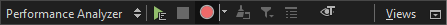
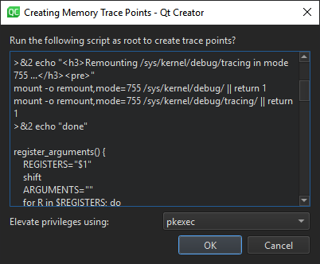
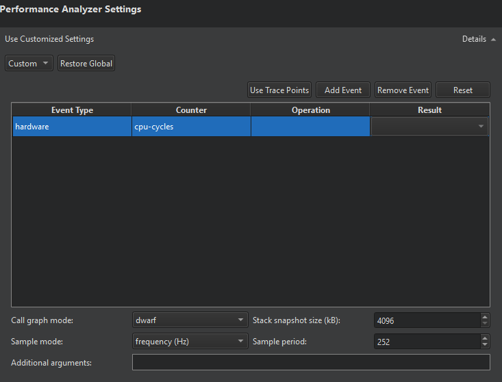
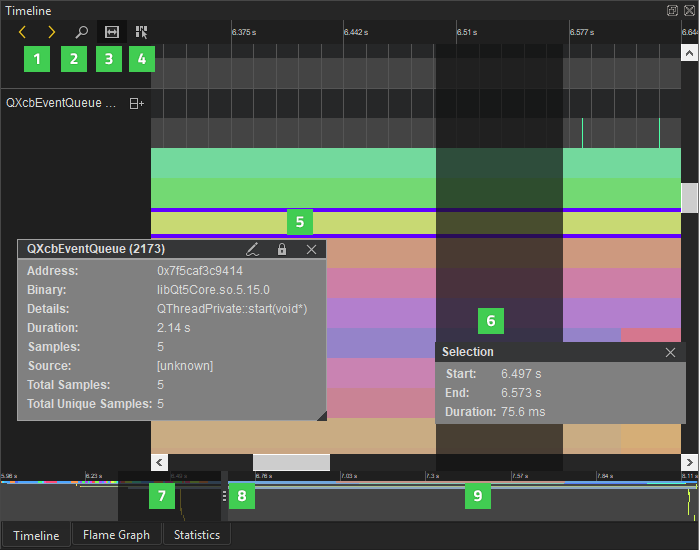
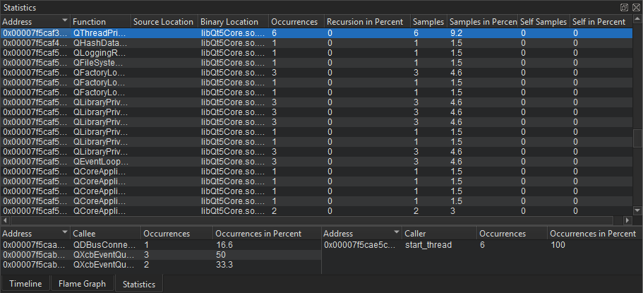
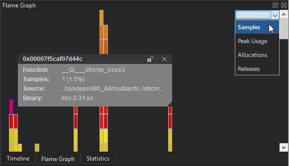
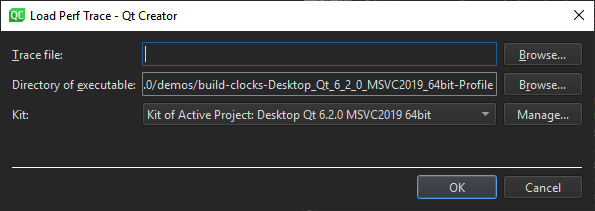

Analyzing CPU Usage
Qt Creator is integrated with the Linux Perf tool that can be used to analyze the CPU and memory usage of an application on embedded devices and, to a limited extent, on Linux desktop platforms. The Performance Analyzer uses the Perf tool bundled with the Linux kernel to take periodic snapshots of the call chain of an application and visualizes them in a timeline view or as a flame graph.
Using the Performance Analyzer
The Performance Analyzer usually needs to be able to locate debug symbols for the binaries involved.
Profile builds produce optimized binaries with separate debug symbols and should generally be used for profiling.
To manually set up a build configuration that generates separate debug symbols, edit the project build settings:
- To generate debug symbols also for applications compiled in release mode, select Projects, and then select Enable in the Separate debug info field.
- Select Yes to recompile the project.
You can start the Performance Analyzer in the following ways:
- Select Analyze > Performance Analyzer to profile the current application.
- Select the
 (Start) button to start the application from the Performance Analyzer.
(Start) button to start the application from the Performance Analyzer.
Note: If data collection does not start automatically, select the  (Collect profile data) button.
(Collect profile data) button.
When you start analyzing an application, the application is launched, and the Performance Analyzer immediately begins to collect data. This is indicated by the time running in the Recorded field. However, as the data is passed through the Perf tool and an extra helper program bundled with Qt Creator, and both buffer and process it on the fly, data may arrive in Qt Creator several seconds after it was generated. An estimate for this delay is given in the Processing delay field.
Data is collected until you select the Stop collecting profile data button or terminate the application.
Select the Stop collecting profile data button to disable the automatic start of the data collection when an application is launched. Profile data will still be generated, but Qt Creator will discard it until you select the button again.
Profiling Memory Usage on Devices
To create trace points for profiling memory usage on a target device, select Analyze > Performance Analyzer Options > Create Memory Trace Points or select on the Performance Analyzer toolbar.
In the Create Memory Trace Points dialog, you can modify the script to run.

If you need root privileges to run scripts as root, select the privileges to use in the Elevate privileges using field.
Select OK to run the script.
To add events for the trace points, see Choosing Event Types.
You can record a memory trace to view usage graphs in the samples rows of the timeline and to view memory allocations, peaks, and releases in the flame graph.
Specifying Performance Analyzer Settings
To specify global settings for the Performance Analyzer, select Preferences > Analyzer > CPU Usage. For each run configuration, you can also use specialized settings. Select Projects > Run, and then select Details next to Performance Analyzer Settings.

To edit the settings for the current run configuration, you can also select the dropdown menu next to the Collect profile data button.
Choosing Event Types
In the Events table, you can specify which events should trigger the Performance Analyzer to take a sample. The most common way of analyzing CPU usage involves periodic sampling, driven by hardware performance counters that react to the number of instructions or CPU cycles executed. Alternatively, a software counter that uses the CPU clock can be chosen.
Select Add Event to add events to the table. In the Event Type column, you can choose the general type of event to be sampled, most commonly hardware or software. In the Counter column, you can choose which specific counter should be used for the sampling. For example, instructions in the hardware group or cpu-clock in the software group.
More specialized sampling, for example by cache misses or cache hits, is possible. However, support for it depends on specific features of the CPU involved. For those specialized events, you can give more detailed sampling instructions in the Operation and Result columns. For example, you can choose a cache event for L1-dcache on the load operation with a result of misses. That would sample L1-dcache misses on reading.
Select Remove Event to remove the selected event from the table.
Select Use Trace Points to replace the current selection of events with trace points defined on the target device and set the Sample mode to event count and the Sample period to 1. If the trace points on the target were defined using the Create Trace Points option, the Performance Analyzer will automatically use them to profile memory usage.
Select Reset to revert the selection of events, as well as the Sample mode and Sample period to the default values.
Choosing a Sampling Mode and Period
In the Sample mode and Sample period fields, you can specify how samples are triggered:
- Sampling by event count instructs the kernel to take a sample every
ntimes one of the chosen events has occurred, wherenis specified in the Sample period field. - Sampling by frequency (Hz) instructs the kernel to try and take a sample
ntimes per second, by automatically adjusting the sampling period. Specifynin the Sample period field.
High frequencies or low event counts result in more accurate data, at the expense of a higher overhead and a larger volume of data being generated. The actual sampling period is determined by the Linux kernel on the target device, which takes the period set for Perf merely as advice. There may be a significant difference between the sampling period you request and the actual result.
In general, if you configure the Performance Analyzer to collect more data than it can transmit over the connection between the target and the host device, the application may get blocked while Perf is trying to send the data, and the processing delay may grow excessively. You should then change the Sample period or the Stack snapshot size.
Selecting Call Graph Mode
In the Call graph mode field, you can specify how the Performance Analyzer recovers call chains from your application:
- The Frame Pointer, or
fp, mode relies on frame pointers being available in the profiled application and will instruct the kernel on the target device to walk the chain of frame pointers in order to retrieve a call chain for each sample. - The Dwarf mode works also without frame pointers, but generates significantly more data. It takes a snapshot of the current application stack each time a sample is triggered and transmits that snapshot to the host computer for analysis.
- The Last Branch Record mode does not use a memory buffer. It automatically decodes the last 16 taken branches every time execution stops. It is supported only on recent Intel CPUs.
Qt and most system libraries are compiled without frame pointers by default, so the frame pointer mode is only useful with customized systems.
Setting Stack Snapshot Size
The Performance Analyzer will analyze and unwind the stack snapshots generated by Perf in dwarf mode. Set the size of the stack snapshots in the Stack snapshot size field. Large stack snapshots result in a larger volume of data to be transferred and processed. Small stack snapshots may fail to capture call chains of highly recursive applications or other intense stack usage.
Adding Command-Line Options for Perf
You can specify additional command-line options to be passed to Perf when recording data in the Additional arguments field. You may want to specify --no-delay or --no-buffering to reduce the processing delay. However, those options are not supported by all versions of Perf and Perf may not start if an unsupported option is given.
Resolving Names for JIT-compiled JavaScript Functions
Since version 5.6.0, Qt can generate perf.map files with information about JavaScript functions. The Performance Analyzer will read them and show the function names in the Timeline, Statistics, and Flame Graph views. This only works if the process being profiled is running on the host computer, not on the target device. To switch on the generation of perf.map files, add the environment variable QV4_PROFILE_WRITE_PERF_MAP to the Run Environment and set its value to 1.
Analyzing Collected Data
The Timeline view displays a graphical representation of CPU usage per thread and a condensed view of all recorded events.

Each category in the timeline describes a thread in the application. Move the cursor on an event (5) on a row to see how long it takes and which function in the source it represents. To display the information only when an event is selected, disable the View Event Information on Mouseover button (4).
The outline (9) summarizes the period for which data was collected. Drag the zoom range (7) or click the outline to move on the outline. You can also move between events by selecting the Jump to Previous Event and Jump to Next Event buttons (1).
Select the Show Zoom Slider button (2) to open a slider that you can use to set the zoom level. You can also drag the zoom handles (8). To reset the default zoom level, right-click the timeline to open the context menu, and select Reset Zoom.
Selecting Event Ranges
You can select an event range (6) to view the time it represents or to zoom into a specific region of the trace. Select the Select Range button (3) to activate the selection tool. Then click in the timeline to specify the beginning of the event range. Drag the selection handle to define the end of the range.
You can use event ranges also to measure delays between two subsequent events. Place a range between the end of the first event and the beginning of the second event. The Duration field displays the delay between the events in milliseconds.
To zoom into an event range, double-click it.
To remove an event range, close the Selection dialog.
Understanding the Data
Generally, events in the timeline view indicate how long a function call took. Move the mouse over them to see details. The details always include the address of the function, the approximate duration of the call, the ELF file the function resides in, the number of samples collected with this function call active, the total number of times this function was encountered in the thread, and the number of samples this function was encountered in at least once.
For functions with debug information available, the details include the location in source code and the name of the function. You can click on such events to move the cursor in the code editor to the part of the code the event is associated with.
As the Perf tool only collects periodic samples, the Performance Analyzer cannot determine the exact time when a function was called or when it returned. You can, however, see exactly when a sample was taken in the second row of each thread. The Performance Analyzer assumes that if the same function is present at the same place in the call chain in multiple consecutive samples, then this represents a single call to the respective function. This is, of course, a simplification. Also, there may be other functions being called between the samples taken, which do not show up in the profile data. However, statistically, the data is likely to show the functions that spend the most CPU time most prominently.
If a function without debug information is encountered, further unwinding of the stack may fail. Unwinding will also fail for some symbols implemented in assembly language. If unwinding fails, only a part of the call chain is displayed, and the surrounding functions may seem to be interrupted. This does not necessarily mean they were actually interrupted during the execution of the application, but only that they could not be found in the stacks where the unwinding failed.
JavaScript functions from the QML engine running in the JIT mode can be unwound. However, their names will only be displayed when QV4_PROFILE_WRITE_PERF_MAP is set. Compiled JavaScript generated by the Qt Quick Compiler can also be unwound. In this case the C++ names generated by the compiler are shown for JavaScript functions, rather than their JavaScript names. When running in interpreted mode, stack frames involving QML can also be unwound, showing the interpreter itself, rather than the interpreted JavaScript.
Kernel functions included in call chains are shown on the third row of each thread.
The coloring of the events represents the actual sample rate for the specific thread they belong to, across their duration. The Linux kernel will only take a sample of a thread if the thread is active. At the same time, the kernel tries to honor the requested event period. Thus, differences in the sampling frequency between different threads indicate that the thread with more samples taken is more likely to be the overall bottleneck, and the thread with less samples taken has likely spent time waiting for external events such as I/O or a mutex.
Viewing Statistics

The Statistics view displays the number of samples each function in the timeline was contained in, in total and when on the top of the stack (called self). This allows you to examine which functions you need to optimize. A high number of occurrences might indicate that a function is triggered unnecessarily or takes very long to execute.
Click on a row to move to the respective function in the source code in the code editor.
The Callers and Callees panes show dependencies between functions. They allow you to examine the internal functions of the application. The Callers pane summarizes the functions that called the function selected in the main view. The Callees pane summarizes the functions called from the function selected in the main view.
Click on a row to move to the respective function in the source code in the code editor and select it in the main view.
To copy the contents of one view or row to the clipboard, select Copy Table or Copy Row in the context menu.
Visualizing Statistics as Flame Graphs

The Flame Graph view shows a more concise statistical overview of the execution. The horizontal bars show an aspect of the samples taken for a certain function, relative to the same aspect of all samples together. The nesting shows which functions were called by which other ones.
The Visualize button lets you choose what aspect to show in the Flame Graph.
- Samples is the default visualization. The size of the horizontal bars represents the number of samples recorded for the given function.
- In Peak Usage mode, the size of the horizontal bars represents the amount of memory allocated by the respective functions, at the point in time when the allocation's memory usage was at its peak.
- In Allocations mode, the size of the horizontal bars represents the number of memory allocations triggered by the respective functions.
- In Releases mode, the size of the horizontal bars represents the number of memory releases triggered by the respective functions.
The Peak Usage, Allocations, and Releases modes will only show any data if samples from memory trace points have been recorded.
Interaction between the views
When you select a stack frame in either of the Timeline, Flame Graph, or Statistics views, information about it is displayed in the other two views. To view a time range in the Statistics and Flame Graph views, select Analyze > Performance Analyzer Options > Limit to the Range Selected in Timeline. To show the full stack frame, select Show Full Range.
Loading Perf Data Files
You can load any perf.data files generated by recent versions of the Linux Perf tool and view them in Qt Creator. Select Analyze > Performance Analyzer Options > Load perf.data File to load a file.

The Performance Analyzer needs to know the context in which the data was recorded to find the debug symbols. Therefore, you have to specify the kit that the application was built with and the folder where the application executable is located.
The Perf data files are generated by calling perf record. Make sure to generate call graphs when recording data by starting Perf with the --call-graph option. Also check that the necessary debug symbols are available to the Performance Analyzer, either at a standard location (/usr/lib/debug or next to the binaries), or as part of the Qt package you are using.
The Performance Analyzer can read Perf data files generated in either frame pointer or dwarf mode. However, to generate the files correctly, numerous preconditions have to be met. All system images for the Boot2Qt:Supported Target Devices and Development Hosts are correctly set up for profiling in the dwarf mode. For other devices, check whether Perf can read back its own data in a sensible way by checking the output of perf report or perf script for the recorded Perf data files.
Loading and Saving Trace Files
You can save and load trace data in a format specific to the Performance Analyzer with the respective entries in Analyze > Performance Analyzer Options. This format is self-contained, and therefore loading it does not require you to specify the recording environment. You can transfer such trace files to a different computer without any tool chain or debug symbols and analyze them there.
Troubleshooting
The Performance Analyzer might fail to record data for the following reasons:
- Perf events may be globally disabled on your system. The preconfigured Boot2Qt images come with perf events enabled. For a custom configuration you need to make sure that the file
/proc/sys/kernel/perf_event_paranoidcontains a value smaller than2. For maximum flexibility in recording traces you can set the value to-1. This allows any user to record any kind of trace, even using raw kernel trace points.The way to enable Perf events depends on your Linux distribution. On some distributions, you can run the following command with root (or equivalent) privileges:
echo -e "kernel.perf_event_paranoid=-1\nkernel.kptr_restrict=0" | sudo tee /etc/sysctl.d/10-perf.conf
- The connection between the target device and the host may not be fast enough to transfer the data produced by Perf. Try modifying the values of the Stack snapshot size or Sample period settings.
- Perf may be buffering the data forever, never sending it. Add
--no-delayor--no-bufferingto the Additional arguments field. - Some versions of Perf will not start recording unless given a certain minimum sampling frequency. Try with a Sample period value of 1000.
- On some devices, in particular various i.MX6 Boards, the hardware performance counters are dysfunctional and the Linux kernel may randomly fail to record data after some time. Perf can use different types of events to trigger samples. You can get a list of available event types by running
perf liston the device and then choose the respective event types in the settings. The choice of event type affects the performance and stability of the sampling. Thecpu-clocksoftwareevent is a safe but relatively slow option as it does not use the hardware performance counters, but drives the sampling from software. After the sampling has failed, reboot the device. The kernel may have disabled important parts of the performance counters system. - Perf might not be installed. The way to install it depends on your Linux distribution. For example, you might try the following commands:
- On Ubuntu 22.04:
sudo apt install linux-tools-$(uname -r) - On Debian:
apt install linux-perf
- On Ubuntu 22.04:
The General Messages view shows output from the helper program that processes the data.
The Application Output view shows some information even if the Performance Analyzer displays error messages.
See also Profiling Function Execution.